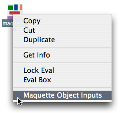
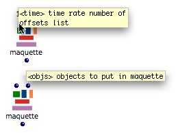
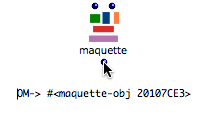
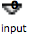
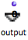
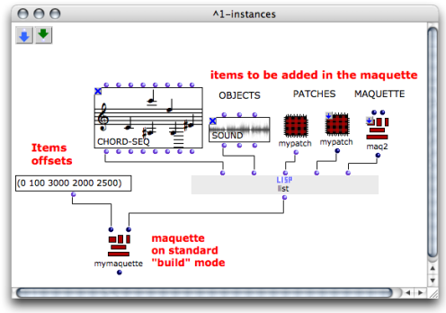
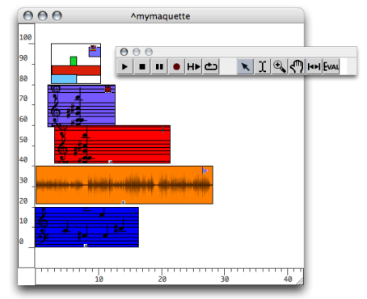

OpenMusic DocumentationHiérarchie de section : OM 6.6 User Manual > Maquettes > Maquettes in Patches > Build Mode
OpenMusic DocumentationHiérarchie de section : OM 6.6 User Manual > Maquettes > Maquettes in Patches > Build Mode
Navigation : page précédente | page suivante
Attention, votre navigateur ne supporte pas le javascript ou celui-ci à été désactivé. Certaines fonctionnalités de ce guide sont restreintes.
Build Mode
Build Mode
Use
| The "build" mode is the default mode of the maquette when it is dropped in a patch. It then shows dark blue inputs and outputs. |
Procedure
To set a maquette back on build mode :
|

|
Inputs and Outputs

|
The two default inputs of the maquette box always take :
The "build" mode was oringinally the only way to add one or more TemporalBoxes in a maquette. It is a convenient way to add a succession of objects in a maquette. Other parameters, such as the vertical position of boxes, cannot be specified. |
The default output of the maquette box returns the value built by the maquette :
|

|
Inputs Lists
Objects and onsets of each lists match each other. Maquettes accept the following types of objects : musical objects , patches and maquettes on "reference" mode .
Standard Inputs and Outputs
Possible standard inputs –  and outputs –  – are hidden outside the maquette.
Example : Adding a List of Items in a Maquette
We want to add a series of items in a maquette located in a patch.

Each input of list is connected to an object. List returns a list of objects references, such as :
OM ==> (# # # # #).
- The second input of the maquette takes this list of items.
- The first input of the maquette takes a list of offsets, which determine the temporal position of the corresponding items.
The items appear in the maquette after the evaluation.
Note that the maquette must be evaluated from the outside to display the items in the right order.

The maquette, once evaluated.
Evaluation and Content
Once the maquette is built, its content can either
remain the same, if no object is connected to it,
be replaced by new objects, if objects are connected to it.
Références :
Plan :
Navigation : page précédente | page suivante
A propos...(c) Ircam - Centre Pompidou